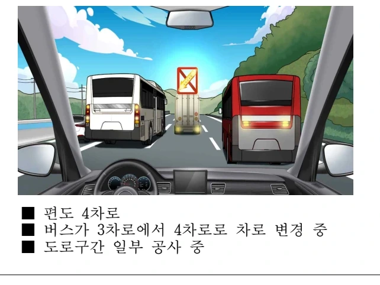

833. Which of the following are potential hazards in the given situation? (Select TWO)

- ①There could be trucks parked ahead, indicating that there is construction.
- ②The bus in lane 2 may slow down for safety.
- ③The bus that just switched to lane 4 may keep going.
- ④The vehicle in lane 1 may increase speed.
- ⑤A vehicle may cut in front of you.
Show answer
Answer
① There could be trucks parked ahead, indicating that there is construction.
⑤ A vehicle may cut in front of you.
Reference
You need to have the mindset that there will always be danger in places you can't see. When driving, you must anticipate not only dangers in front of you but also dangers far away, and it is important to maintain a safe speed and distance to prepare for danger.
Reference text is a machine translation for study.